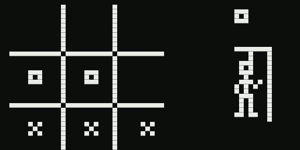
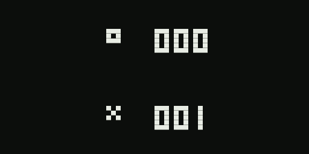

Noughts and Crosses
M.K. Dowson · DREAMER no. 14 (1981-10) p. 13 1K RAM


Noughts and crosses for two players, O and X. Games restart on their own with the cumulative scores kept, and the loser or the winner alternates who goes first.
Keys
Squares are 0 1 2 / 4 5 6 / 8 9 A.
Files
| File | Version | Load | Run |
|---|---|---|---|
| Noughts and Crosses.d68 | main | 0090-03F5 | C000 |
Listing as transcribed (with notes): noughts_and_crosses.txt
Source
DREAMER no. 14 on archive.org, p. 13 (PDF page 15). Author: M.K. Dowson.
Corrections applied
None.
Open doubts
None.